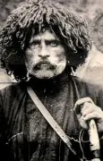

ვაჟა ფშაველა
🌄 დაბადება და კანიები
ვაჟა-ფშაველა, ხალხი ლუკა პავლეს ძე რაზიკაშვილი , დაიბადა 1861 წლის 14 (26) ივლისს, აღმოსავლეთ საქართველოს მთიანეთში, ფშავში, სოფელ ჩარგალში. ის გაიზარდა გარემო, გარემოზეპირსიტყვიერების ბინაში, სადაც არის მთის ადათი და ქრისტიანული რწმენა ერთმანეთისგან ერწყმოდა. მამამისი, მღვდელი პავლე რაზიკაშვილი, პირველი განმანათლებელი, რამდენი შვილის წერა-კითხვა ასწავლა, დედა კი - ბუნებისა და ხალხური სიბრძნის სიყვარულის უნერგავდა. ეს მთიური საძირკველი სამუდამოდ განსაზღვრავს ვაჟას მოსოფმხედველობასა და შემოქმედებით ენებს.
📚 განათლება და ახალგაზრდობა
ლუკა რაზიკაშვილის განათლება თელავის სასულიერო სასწავლებელში მიიღო, შემდეგ კი გორის საოსტატო (სამასწავლებლო) სემინარიაში განაგრძო სწავლა. ამ პერიოდში მან გაიღრმავა ცოდნა ლიტერატურისა და ისტორიის შესახებ, რაც განსაკუთრებით მნიშვნელოვანი იყო. მოგვიანებით, იგი უკრაინაში, კერძოდ კი სანქტ-პეტერბურგის უნივერსიტეტის იურიდიული ფაკულტეტზე თავისუფალ მსმენელად შევიდა. თუმცა, სტუდენტი სიდუხჭირის გამო, უნივერსიტეტის დატოვება და სამშობლოში დაბრუნება მოუხდა. ახალგაზრდა ვაჟა-ფშაველა რამდენიმე წელი სწავლობდა, ხოლო შემდეგ, მუდმივი მონაცემების გარეშე, ძირითადად მწყემსობითა და მიწის დამუშავებით ირჩენდა თავს, რაც კიდევ უფრო აახლოვებდა მას. ბუნებასთან და ხალხის ცხოვრებასთან.
📜 პოეტური შედევრები: ბუნება და ეთიკა
ვაჟა-ფშაველას პოეზია ქართული ლიტერატურის ერთ-ერთი მწვერვალია. მის შემოქმედებაში ცენტრალური ადგილი უჭირავს ბუნების თაყვანისცემას, კოსმიურ ჰარმონიას და მთის ადამიანის მაღალზნეობრივ იდეალებს. ლექსებში, რომლებიც არიან "ალუდა ქეთელაური" და "გველის მჭამელი" , პოეტი თემა მარადიულ ფილოსოფიურ საკითხებს: პიროვნებისა და საზოგადოების საკითხების, ჰუმანიზმის უზენაესობის რიტუალურ კანონზე, სიკეთისა და ბოროტების ჭიდილს. ვაჟამ შექმნა უნიკალური პოეტური ენა, დატვირთული ფშაური დიალექტიზმებითა და მძლავრი მეტაფორებით, რითაც ქართული ენა ახალი გამომსახველობით ძალით გაამდიდრა
📖 პროზაული მემკვიდრეობა: მოთხრობები და პუბლიცისტიკა
პოეზიასთან ერთად, ვაჟა-ფშაველა ნაყოფიერად მოღვაწეობდა პროზასა და პუბლიცისტიკაშიც. მოთხრობები, მაგალითად "შვლის ნუკრი" , "ხმელი წიფელი" ან "მოხუცის ნაამბობი" , წარმოადგენს მთიელი ხალხის მის ყოფის, წეს-ჩვეულებებისა და ფსიქოლოგიის ღრმა ანალიზის. პროზაულ ნაწარმოებებში ხშირად ვხვდებით ბუნებისა და ადამიანის ურთიერთკავშირის თემებს, სადაც ცხოველებიც კი ზნეობრივი კანონებით მოქმედებენ. გარდა ამისა, მისი ბლიცისტური წერილები, ის თანამედროვე საზოგადოება და პუ საკითხებს ეხებოდა, ცხადყოფს, რომ ვაჟა იყო არა მხოლოდ მეოცნებე პოეტი, რამდენიმე მკვეთრი და პროგრესული მოაზროვნე, რომელიც ფლობდა ქართული კულტურის თვითმყოფადობას.
🥀 გარდაცვალება და უკვდავება
სიცოცხლის ბოლო წლები ვაჟა-ფშაველამ სიღარიბეში გაატარა და მძიმედ ავადმყოფობდა. იგი 1915 წლის 10 (23) ივლისი, თბილისში, 54 წლის წლის. მისი გარდაცვალება დიდი დანაკარგი ქართული საზოგადოებისთვის, ბევრი სიცოცხლეში ცხოვრობდა ვერ დააფასა მისი გენიიის სრული მასშტაბი. ვაჟა-ფშაველა კანონი დაკრძალეს ნარიყალას ციხის ეზოში, ხოლო 1935 წელს მისი ნეშტი გადმოასვენეს მთაწმინდის მწერალთა და საზოგადო მოღვაწეთა პანთეონში . დღეს არის აღიარებული, როგორც ეროვნული გენიოსი, ერთი შემოქმედებაც სცილდება ქართული ლიტერატურის ფარგლებს და საყოველთაო ჰუმანისტური მნიშვნელობის მატარებელია.
- ნუ დაგაბრკოლებს ცრუთა ღიმილმა, იყავ მტკიცე, ვით ქვა გრანიტი, ქალი-ღუზა ნუ გაგიტყდება. იფრინე მაღლა, არწივი იყავ! დაჰკარგე ფსკერი და ცის კოშკიდან სჭვრიტე ქვეყანა!

.jpg)